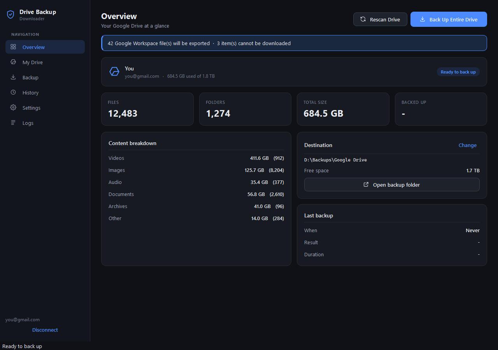
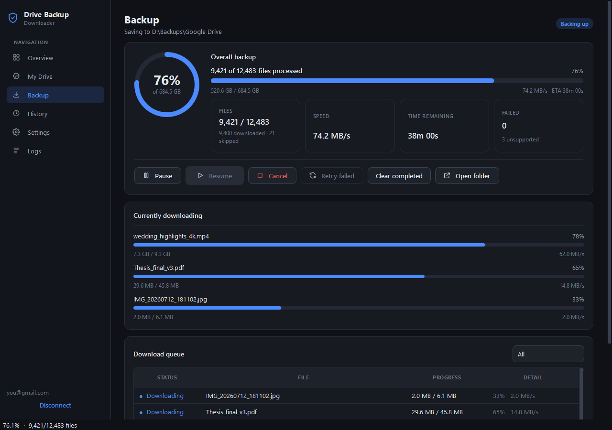
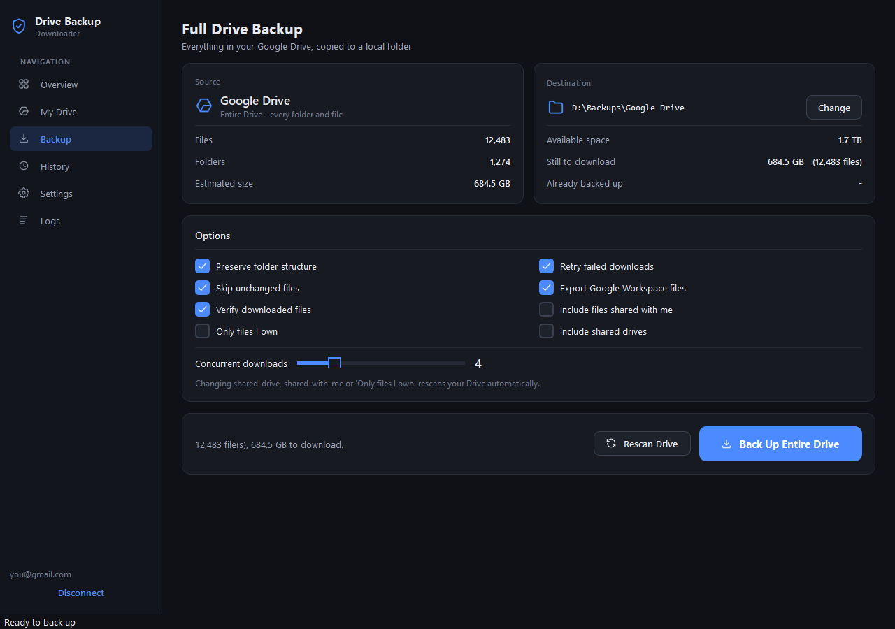
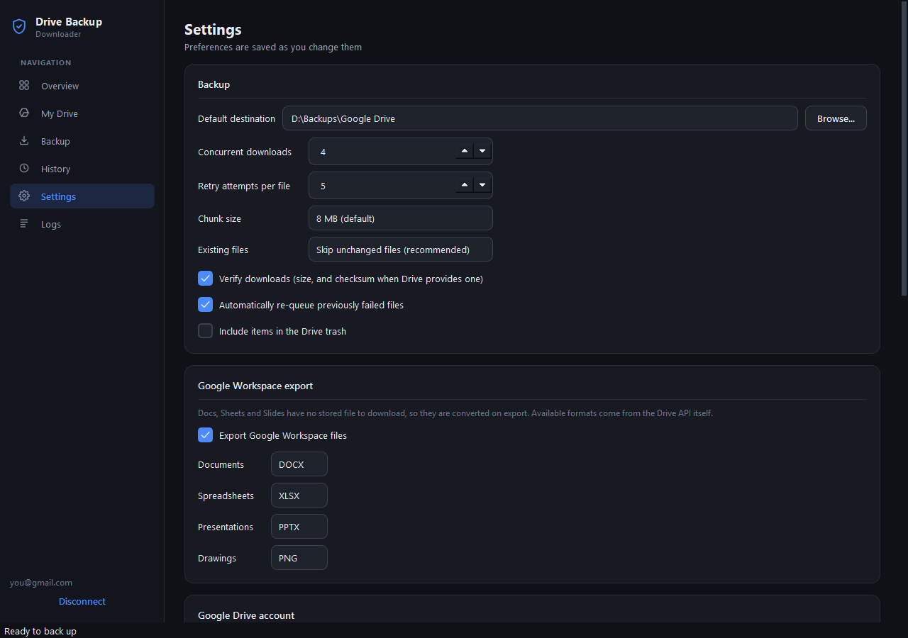
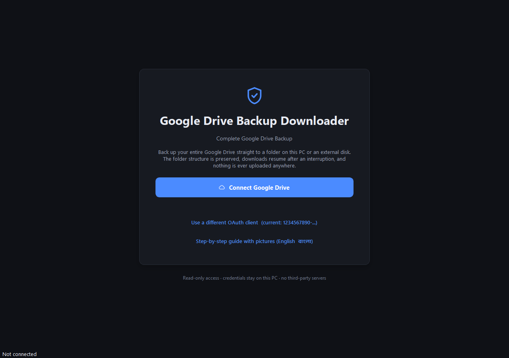

Whole Drive in one click
No picking folders one at a time. Press Back Up Entire Drive and everything comes down.
Google Drive Backup Downloader copies your whole Drive to a local folder or external disk in one click — same folder structure, resumable downloads, and later runs fetch only what changed.

Takeout is built for one-off exports. This app is built to keep an up-to-date copy of your Drive on a disk you own.
| Capability | Drive Backup Downloader | Google Takeout |
|---|---|---|
| What you get | Normal folders, mirroring your Drive exactly | Zip archives you download and extract |
| Next backup | Only new and changed files | Request a full export again |
| Interrupted download | Resumes each file from the exact byte | Start that archive over |
| Integrity check | Size + MD5 verified per file | Up to you |
| Waiting | Starts immediately, live progress | Wait for Google to prepare the export |
| Destination | Straight to any disk, external drive or network path | Browser downloads folder, then move it |
| Cost | Free, open source (MIT) | Free |
Built for big Drives, flaky connections and people who want their files in plain folders they can open years from now.
No picking folders one at a time. Press Back Up Entire Drive and everything comes down.
Videos/YouTube/2026/video3.mp4 lands at D:\Backup\Videos\YouTube\2026\video3.mp4. Nothing is flattened.
A 40 GB video uses the same memory as a 40 KB one — bytes go straight from the network to disk in chunks.
Network drop, crash or pause: partial files continue from the exact byte using HTTP Range requests.
Point it at the same folder next week and it skips unchanged files, fetching only what’s new or modified.
Every file is checked by size, plus the MD5 checksum Drive publishes. Only then is .part renamed to the real name.
Docs → DOCX/PDF, Sheets → XLSX/CSV, Slides → PPTX/PDF, Drawings → PNG/SVG/PDF.
Not when a file disappears from Drive, not on cancel, not on disconnect. Removing anything is always your call.
One bad file never stops the run. Failures get a readable reason, and Retry failed re-queues them all.
Optionally include shared drives and files shared with you, each placed in its own clearly named folder.
Tune concurrency to your connection. A built-in rate limiter and backoff keep you inside Google’s quotas.
A clean native-feeling interface with live progress, speed, ETA and a per-file queue.
A one-time setup, then every backup after that is a single click.
In Google Cloud Console, enable the Drive API and create a Desktop app OAuth client. Download credentials.json. It’s free and only done once.
Run the app and click Connect Google Drive. You approve read-only access on Google’s own page in your browser — the app never sees your password.
Windows 10 / 11Choose any disk, external drive or network path. The Drive is scanned, free space is checked, then hit Back Up Entire Drive and watch it go.
Re-run anytime: only changes downloadFirst launch: the .exe isn’t code-signed, so Windows SmartScreen may say “Windows protected your PC”. Click More info → Run anyway. Google will also show “Google hasn’t verified this app” for your personal key — click Continue; that is expected because the key is yours. See every screen in the setup guide.
From first sign-in to a finished backup.




Data flows Google → Google Drive API → your PC. That is the only path it takes.
drive.readonly scope — it cannot modify or delete anything in your Drive.Scope requested: https://www.googleapis.com/auth/drive.readonly
Yes. It asks Google only for read-only access (the drive.readonly scope), so it cannot modify or delete anything in your Drive. You sign in on Google’s own page in your browser, so the app never sees your password. Your sign-in token is stored in Windows Credential Manager, and the app contacts no server other than Google’s own API: no telemetry, no analytics. The full source code is on GitHub.
Yes. It is free and open source under the MIT license, with no paid tier, no sign-up and no ads. Creating the Google Cloud project it needs is free as well.
Yes. Google Workspace files are exported to regular formats: Docs to DOCX or PDF, Sheets to XLSX or CSV, Slides to PPTX or PDF, and Drawings to PNG, SVG or PDF. Google Forms, Sites and My Maps have no export format in the Drive API, so they are reported with the reason instead of being silently skipped.
Takeout packs your Drive into zip archives that you have to request, wait for, download and extract, and you start over every time. Google Drive Backup Downloader copies your Drive straight into a normal folder with the same structure, resumes interrupted downloads, and on later runs only fetches new and changed files.
Yes. The destination can be any local disk, an external HDD or SSD, or a network path. Before starting, the app checks that there is enough free space. If the drive disconnects mid-backup, reconnect it and resume: completed and partially downloaded files are still there.
Nothing is lost. Each file downloads into a temporary .part file and continues from the exact byte where it stopped, using HTTP Range requests, whether the network dropped, the app crashed or you paused. Temporary errors are retried automatically with backoff, and files that still fail are listed so you can retry them.
The ready-to-run download is for Windows 10 and 11. The app is written in Python, and its code also runs on macOS and Linux if you run it from source with Python 3.12 or newer.
The app talks to Google directly from your PC, with no server in between, so it signs in with an OAuth client that belongs to you. Creating one is a free, one-time setup that takes about five minutes, and it means your access is never routed through anyone else.
The .exe is not code-signed, so Windows SmartScreen may say “Windows protected your PC” the first time you run it. Click More info, then Run anyway. You can also review the source code or build the .exe yourself from the repository.
No. It cannot change anything in your Google Drive because it only has read-only access, and it never deletes local files either: not when a file disappears from Drive, not on cancel and not on disconnect. Removing files is always your decision.
Free, open source and read-only. Set it up once, then keep your backup current with a single click.